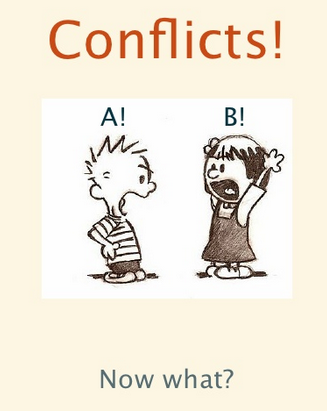
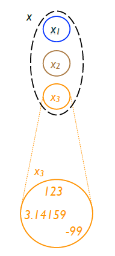

1.开篇.
复制(Replication，如何保证某个对象在所有集群机器上的内容保持一致)这样一个分布式领域内的基础概念，已经被各种组织、机构进行了充分研究和实践。最终一致性这种复制方式被越来越多的工程实践者所推广：在不需要保证前一个操作被其他复制者确认、每个操作都是异步的分发给复制者、并且每个复制者执行这些操作的顺序都可以不一样、不关心短时间的网络分区...。这些特性是很让人动心的，虽然最终一致性的复制方式也有这样或那样的问题(如必然存在复制的时间窗口)，但在某些应用里，这种方式已经很好的满足了。 其实，只要是自己做过或分析过大型分布式系统，replication就会经常进入我们的视线。可能我们都有这样或那样的土经验，但系统的研究replication的理论并不多。最近接触到了一个新理论CRDT(convergent or commutative replicated data type)。在看了相关的一系列论文后，觉得有必要系统的整理和分享一下CRDT。
2.背景和系统模型.
假设我们有这样一个分布式系统，它由一个异步且互相连接的多进程网络。这个网络可能会分区或修复、而且可能有些节点在off-line的一段时间内也可以执行操作、这些进程也可能会崩溃或修复。
2.1 Atoms and objects
这样的进程可以存储两种数据类型：基本元素和对象。基本元素是那些值不变化的数据类型，它们值就代表它们自身。这些基本元素可以在进程间copy。判断两个基本元素是否相等是依据它们的值来进行比较的。在这篇论文中，基本元素主要包括integers, strings, sets, tuples,等，基本元素一般用小写来表示。
而对象是一种值可改变的数据类型。它一般用大写字母表示，如”Set."。每个对象都是由id + 值(或者叫payload) + 初始状态 + 操作接口组成的。对象的值可以是任意数量的基本元素或其他对象。如果两个对象有相同的id，但是分布在不同的进程里，则它们互为对方的副本。如下图1所示：一个对象x它的副本在进程1、2、3里、进程3里当前x的内容:
这里为了简化和普遍性，我们假设对象之间是相关独立的，并且不考虑可能存在的事务等因素。而且我们主要考虑的是单个对象的场景。
2.2 Operations
我们假定是在这样一个场景里：几个客户端随意的进行查询、修改对象状态的操作。某个客户端选定的进程里的对象被叫做副本源。查询操作都是在本地(本进程)内执行的。而更新操作则分成两个阶段：1)某客户端在副本源调用某个更新操作。2)更新动作被异步传递到其他所有副本，这个阶段叫做downstream。它可以分为两类：基于状态/基于操作。在后面章节会对这两类进行详细介绍。
2.2.1 State-based objects
在基于状态复制的对象里，更新操作是完全在副本源里完成的。然后再传递更新后的值(完整的)到其他副本，如图2所示:

我们用规范1来定义到底什么是基于状态的复制。关键字'payload'表示值的类型、'initial'表示每个副本的初始值、'update'表示一个更新操作、'query'表示查询操作(更新和查询都可以有参数和返回值(也可以没有))、'let'表示不能修改的那些声明、':='表示对值的修改。默认每个操作都是原子完成的。
Specification 1 Outline of a state-based object specification
1: payload Payload type; instantiated at all replicas (初始化所有副本)
2: initial Initial value
3: query Query (arguments) : returns (查询操作：可有前置条件、返回值等)
4: pre Precondition
5: let Evaluate synchronously, no side effects
6: update Source-local operation (arguments) : returns (更新操作：可有前置条件、返回值等，原子的更新本地值)
7: pre Precondition
8: let Evaluate at source, synchronously
9: Side-effects at source to execute synchronously
10: compare (value1, value2) : boolean b
11: Is value1 <= value2 in semilattice?
12: merge (value1, value2) : payload mergedValue (merge操作:使用LUB操作合并本地和其他副本传递过来的值)
13: LUB merge of value1 and value2, at any replica
为了保证操作的正确性，如果一个操作包含有前置条件，则只有当前状态满足这个前置条件，才能执行该操作。如：删除Set中的某个元素，则必须满足'这个元素已经存在'的这个前置条件。如果某操作没有设置前置条件，则它总是能被执行的。如：对某个计数器的增加和减少。 后台系统会在副本之间传递这些修改(如采用gossip方式)。接到更新的副本会调用merge方法来更新自身的值。 我们这里引入一个新的概念：副本的C(因果/前后历史)，它具体定义如下：
定义2.1(状态模式下的因果历史).对任何x的副本xi: 1.初始化为空. 2.执行完更新操作f后， c(f(xi)) = c(xi) 并集 {f}. 3.执行完merge操作后(参数是xi,xj), c(merge(xi, xj)) = c(xi) 并集 c(xj). 典型的happens-before关系可以被定义成：f->g 等价于 c(f)包含在c(g)里。系统会要求最终使每个更新分发到每个副本的因果历史中去。为了达到这个效果，底层通讯一般采用类似gossip的协议来搭建。
2.2.2 Operation-based (op-based) objects
在基于操作复制的对象里，副本间传递的是'操作'，如下图3所示。我们用规范2来定义这种复制，关键字'payload'、'initial'和基于状态的模式里一样；'query'表示不进行值修改的操作，它完全在本地执行。

Specification 2 Outline of operation-based object specification
1: payload Payload type; instantiated at all replicas (初始化所有副本)
2: initial Initial value
3: query Source-local operation (arguments) : returns
4: pre Precondition
5: let Execute at source, synchronously, no side effects
6: update Global update (arguments) : returns (更新操作分为两个阶段)
7: atSource (arguments) : returns (1.本地执行阶段更新本地值)
8: pre Precondition at source
9: let 1st phase: synchronous, at source, no side effects
10: downstream (arguments passed downstream) (2.远程副本执行阶段)
11: pre Precondition against downstream state (有前置条件的必须要满足该条件)
12: 2nd phase, asynchronous, side-effects to downstream state
'update'表示有更新的操作。它分为两个阶段：atSource和downstream。atSource是在本地执行的，如果它有前置条件，则必须先满足其前置条件，才能执行。atSource的执行是原子的，也就是不考虑事务等其他一些复杂性。它的参数就是客户端调用传入的参数，它能返回结果给客户端，或者为downstream阶段准备数据。downstream是第二个执行阶段，它代表异步的在各个副本中的执行过程，所以它不能返回结果，并且只有在其前置条件满足后才能执行。 同上，我们定义副本xi的因果/前后历史C(xi)。
定义2.2(操作模式下的因果历史).对任何x的副本xi的因果历史:
1.初始化为空.
2.在副本xi上执行完downstream阶段后，c(f(xi)) = c(xi) 并集 {f}.
系统会要求最终把每个更新都最终分发到每个副本的因果历史中去。为了达到这个结果，我们假设底层系统能可靠的按照某种顺序' 操作之间的happens-before关系同上面的基于状态的是一样的。我们这里再定义一个新的术语'符合因果关系的分发'(causal delivery)：如果f->g，则f要先于g被分发到其他副本上。本论文中的所有downstream的前置条件都要满足causal delivery。
先定义两个概念：
定义 2.4 (LUB：最小上界)：我们说m是一个集合{x,y}的LUB，当且仅当 (x 小于等于 m) && (y 小于等于 m) && (不存在 m' 小于等于 m && x 和 y 小于等于 m’)。通过上面的定义，我们可以知道LUB满足下面这些特性：可交换、幂等、可组合。
定义 2.5(Join Semilattice:半格)：我们说一个集合是半格，当且仅当对于任意的集合元素x、y，都满足LUB。
如果在基于状态复制的对象中，满足下面这些条件，则我们称它为CvRDT(Convergent Replicated Data Type)：
1.它的值满足半格要求.
2.merge操作是进行LUB操作.
3.更新操作满足单调递增.
这样的对象会收敛到它们最新更新的值。如图3所示：一个CvRDT对象,它有一个integer值，merge操作=max();
定理2.1：任意两个CvRDT对象其底层网络传输能做到点对点的最终可靠性，则它们可以收敛。
下面我们进行一下证明，任意两个副本xi、xj只要它们之间能通过底层通讯(直接或间接的)交换彼此更新的值，通过merge操作就可以收敛成一样的值。由于上面说所CvRDT的值符合单独递增的条件，并且由于merge是按照LUB进行
操作的，所以 xi LUB xj = xj LUB xi。这样，只要所有的副本都能用最新的值进行merge，则所有副本都可以最终相等。
下面我们再详细介绍基于操作的对象收敛：底层系统要保证所有更新操作能最终分发到每个副本上，并且如果所有并发操作都具备可交换性，则最终所有副本都会收敛到相同的值。则满足这样的副本对象，我们叫做CmRDT(Commutative Replicated Data Type)。
如之前所说，本文的对象都满足'符合因果关系的分发'(causal delivery)。对有些对象来说这种分发关系已经足够了，它们更在意某些操作是否具备互换性。
下面我们对一个非常重要的概念做一个定义，可交换性(Commutativity)：操作f和g可交换的必要条件是，当且仅当f和g在任意副本的当前状态时，都可以执行。而且f可以在g已经执行后，也顺利执行。反之，如果g可以在已经
执行完f后，任然满足执行它的条件，则认为f和g这两个操作具有可交换性。
下面我们把CmRDT的特性再归纳一下：假设某一时刻，之前所有分发操作都完成了。则所有并发操作它们必须满足可交换性，而且底层通讯模块要保证causal delivery，否则不发送当前操作，直至符合因果关系。满足上面这两个条件的对象，则认为是CmRDT。后面我们会举一些CmRDT例子，它们在设计的时候，都会满足这些条件。
我们已经知道了两种收敛方式：CvRDT 和 CmRDT，我们统称它们叫CRDTs。它们之间有相同点，也有不同点。CvRDT比较容易理解和实现，因为它们传递的值里面已经包括了所有需要的信息了，它们对底层网络的要求不高，也不在乎副本个数。但是它的问题是有些大对象，发送它们的完整信息所需的数据量有点大。目前有些文件系统如NFS, AFS或Dynamo 和 Riak它们就使用了CvRDT这种方式。
而CmRDT它的问题是实现复杂，因为它需要保存下操作的历史记录，而且对底层通讯要求较高。目前采用这种方式的大型系统还不多。但其实CvRDT 和 CmRDT它们可以相互模拟的。
Counter(计数器)是一个可在多个副本间传递的整数，它支持添加、删除操作。最终每个副本的值都趋于相等：所有参与者调用的‘添加‘的次数 – ’删除‘的次数。上面所说的’添加‘操作不仅仅是指+1，也可以+N，’删除‘操作类似。计数器类型的CRDT对象被使用在很多对等网络(peer-to-peer)应用里，如统计当前所有节点的用户登录人数。
下面我们将介绍几个计数器的CRDT实现，虽然它可能看起来简单，但也体现了如何设计一个好的CRDT的一些原则。
基于操作的计数器的规范如下所示：
2.3 Convergence
2.3.1 State-based CRDT: Convergent Replicated Data Type (CvRDT)
 最终收敛要求通讯层面保证所有的更新都分发到副本中去。但这种对通讯层面的要求其实可以很宽松，由于merge是满足LUB的(具备可交换、幂等)，所以即使发生消息丢失、乱序、重复发送这些都没关系，只要能最终收到最新的值就行了，而且一段时间的offline问题也不大，只要最终网络能修复即可(要求是真够宽松的)。
最终收敛要求通讯层面保证所有的更新都分发到副本中去。但这种对通讯层面的要求其实可以很宽松，由于merge是满足LUB的(具备可交换、幂等)，所以即使发生消息丢失、乱序、重复发送这些都没关系，只要能最终收到最新的值就行了，而且一段时间的offline问题也不大，只要最终网络能修复即可(要求是真够宽松的)。
2.3.2 Operation-based CRDT: Commutative Replicated Data Type (CmRDT)
2.4 Relation between the two approaches
实例
3.1 Counters
3.1.1 基于操作的计数器（Op-based Counter）
这种Op-based的复制比较直观，由于（i+1）和（i-1）是可交换执行顺序的，所以它是一种CmRDT。
Specification 3 op-based Counter
1: payload integer i (定义payload为整数)
2: initial 0 (初始化为0)
3: query value () : integer j (查询操作返回i)
4: let j = i
5: update increment () (递增操作直接让各个副本执行i+1操作)
6: downstream () .
7: i := i + 1
8: update decrement () (递减操作直接让各个副本执行i-1操作)
9: downstream () .
10: i := i – 1
3.1.2 基于状态的计数器
3.1.2.1 State-based increment-only Counter (G-Counter)
基于state-based的计数器稍微有点复杂。我们先从简单的只有递增的计数器开始。 假设我们设计一个计数器，它的payload是个整数，而且merge操作就是个简单的max比较。满足上面要求的计数器就是一个CvRDT。假定有两个副本满足上面这些要求，具备相同的初始化值0，在每个副本客户端发起一次递增操作，它们收敛为1(max的结果)，但其实我们希望的结果是2。 假设我们再设计另外一个计数器，它的payload是个整数，merge操作是’相加’，但这些要求不满足幂等性，因为多次重复调用merge会导致结果不同。 所以上面的两种假设都不是我们想要的，为此我们设计了下面这个出来满足我们要求的计数器，它的规范如下：
Specification 4 State-based increment-only counter (vector version)
1: payload integer[n] P . One entry per replica
2: initial [0, 0, . . . , 0] (初始化一个integer数组P，每个副本对应一个，初始为0)
3: update increment ()
4: let g = myID() (找到本副本对应的数组P下标，值+1)
5: P[g] := P[g] + 1
6: query value () : integer v
7: let v = Σi P[i] (总和数组P的每个值作为当前值返回给查询操作)
8: compare (X, Y) : boolean b
…
10: merge (X, Y ) : payload Z (对本地数组X、其他副本传递来的数组Y，依次比较每个位置的值，取最大值)
11: let 对任意i∈[0, n-1]：Z.P [i] = max(X.P [i], Y.P [i])
3.3 Sets
数组(set)是个非常基础的数据结构，它是组成map、graphs等复杂数据结构的基础。由于add和remove操作它们不能互交换，所以通常意义下的set它不是一个CRDT。但我们可以设计满足CRDT同时又提供set类似的操作，这些设计的主要区别在并发操作下是add优先还是remove优先。
3.3.1 Grow-Only Set (G-Set)
G-set相对简单，它只支持add操作，无论是state-based and op-based，这两种方式它们的payload都是set。由于add操作是做并集，它具备可交换性。所以，基于op-based的对象它是一个CmRDT。 而对于state-based的对象，由于其merge操作merge(S, T) = S ∪ T，它是一个LUB 操作。所以这种对象它是一个CvRDT。
3.3.2 2P-Set
2P-set(Two-Phase Set)是另外set，它支持add和remove，但是被删除的元素不能再添加进来。2P-set是由2个G-set组成，1个用来做add，一个用来做remove。
Specification 5 State-based 2P-Set
1: payload set A, set R (A = added; R = removed;初始化为空)
2: initial 空,空
3: query lookup (element e) : boolean b (查询元素e在队列中，e属于A但是不属于R)
4: let b = (e ∈ A ^ e ∉ R)
5: update add (element e) (元素e做并集加到A中)
6: A := A ∪ {e}
7: update remove (element e) (删除元素e，必须要先判断它是否存在)
8: pre lookup(e)
9: R := R ∪ {e}
10: compare (S, T) : boolean b
11: …
12: merge (S, T) : payload U (merge操作分别对A、R做并集)
13: let U.A = S.A ∪ T.A
14: let U.R = S.R ∪ T.R
参考
A comprehensive study of Convergent and Commutative Replicated Data Types (完整的论文和实例讲解，但有些定义或证明还是有点饶，可以结合下面一篇一起看) Conflict-free Replicated Data Types (这篇文章短小精悍，当上面那篇文章的某些定义不好理解的时候，参考这篇，这篇可能更接地气)
contact 1054618780@qq.com 任何问题欢迎讨论 by netcomm